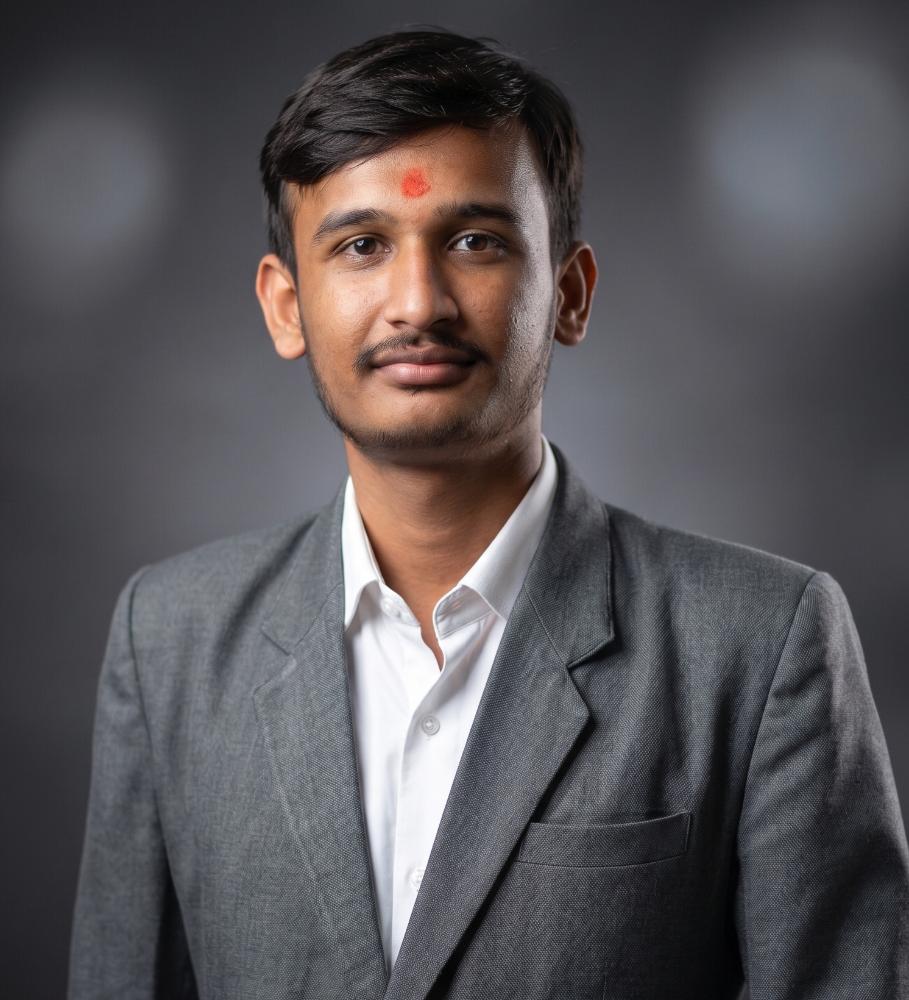

I build machine learning models,
AI applications, and automation
systems that turn data and
business problems into practical solutions.
I'm Rushit — I design and build automation systems, AI-powered applications, and machine learning pipelines that solve real business problems. Below: 3 in-depth case studies, plus other work across data applications and NLP.
Have a workflow you want to automate? Tell me what you're doing manually →

Two real-world engineering roles. One production ML pipeline running on 1.2M+ real records. That's the experience every project I take on builds on.
I've spent the last year working through messy data, shifting requirements, and real deadlines — not just tutorials. Your project gets that experience, applied to your data.
Why work with me
WHAT THAT ACTUALLY MEANS FOR YOUR PROJECT
Production-minded
I build complete, usable systems instead of stopping at a notebook or a model — currently running a live pipeline on 1.2M+ real records at Supernal Ventures.
End-to-end development
I can work across data processing, feature engineering, AI/ML, APIs, dashboards, and deployment — not just one slice of the stack.
Business-focused
I start with the problem and the workflow before choosing the technology, so the output is something your team can actually use.
Freelance ready
Available now for AI automation, machine learning, and data-application projects, based in Surat (GMT+5:30), and quick to respond.
Featured case studies
3 SELECTED PROJECTS — PROBLEM, PROCESS & STACK FOR EACH
A real-time hybrid ML/RL trading and risk console that automates market-regime classification, signal prediction, and dynamic lot sizing across 1.2M+ time-series records.


Problem statement
Manual strategies couldn't process 1.2M+ high-frequency records fast enough or adapt to shifting market regimes, leading to inconsistent win rates, delayed entry/exit executions, and unpredictable drawdowns.
Why it needed solving
Automated, regime-aware decision-making eliminates emotional and manual bias, providing systematic risk management, dynamic lot sizing, and consistent execution during high market volatility.
How I implemented it
Built a full-featured algo trading console combining a PyTorch TCN for sequence modeling, LightGBM for classification, and Gaussian HMM for regime detection, orchestrated with a DRQN (LSTM) reinforcement-learning decision engine. Implemented 15+ engineered features (Hurst Exponent, Market Structure Shifts), a Dynamic Lot Sizer with Thermal Dissipation (+a PnL Win Run), ATR trailing stop-loss, and real-time tick streaming with institutional risk metric tracking.
Languages
ML / DL Frameworks
Outcome
A safety-first SaaS platform that connects securely to Gmail via OAuth 2.0 to triage incoming messages, detect sensitive data & phishing scams, and schedule natural human-like acknowledgements.


Problem statement
Email overload and delayed response times lead to lost business opportunities and user burnout. Existing auto-responders either send generic static replies or risk inaccurate AI hallucinations without security filters — leaving users exposed to phishing scams and accidental leakage of sensitive credentials or OTPs.
Why it needed solving
Individuals and companies spend hours manually sorting and acknowledging emails. An autonomous AI responder must be safety-first: delivering intelligent prioritization (0–100 score) while proactively blocking automated replies to phishing threats, password resets, and confidential threads.
How I implemented it
Integrated Google Gemini API using Pydantic structured schemas for deterministic parsing, multi-tier importance scoring, tone classification, and phishing heuristics. Built an asynchronous FastAPI REST backend with SQLAlchemy and Google OAuth 2.0, paired with a 3-column Next.js/Tailwind triage dashboard, sandboxed iframe viewer, and a smart delay-send queue that auto-cancels if the user replies manually.
Languages
ML / DL Frameworks & AI Tools
Outcome
An agentic AI platform that researches any company from just a name or URL — crawling its site, indexing search results, mapping competitors, and compiling a ReportLab PDF, with results also pushed to Discord.


Problem statement
Researching a company for sales, hiring, or due diligence means manually hunting across the company site, news, and competitor listings — slow and inconsistent from one company to the next.
Why it needed solving
A single input — a name or URL — turning into a structured, shareable report saves hours per lookup and gives every research pass the same depth and format.
How I implemented it
Built an agent pipeline on FastAPI that crawls the target site for contacts and public info, queries Serper.dev for news and competitor data, then runs OpenRouter LLM synthesis (Gemini 2.5) to generate a SWOT-style analysis. Results are compiled into a paginated ReportLab PDF and optionally pushed to a Discord channel via bot integration.
Languages
Frameworks / APIs
Outcome
Have a similar problem? I can build the system for you.
Discuss Your Project →Services
WHAT CLIENTS CAN HIRE ME FOR
AI Automation
Automate repetitive business workflows using Python, APIs and AI.AI Agents
Build AI-powered agents for research, documents, data analysis and business workflows.Machine Learning
Build prediction, classification, recommendation and forecasting systems.Data Applications
Build dashboards, analytics applications and automated data pipelines.Trading & Backtesting
Build market-data processing, strategy backtesting and trading analytics systems.Have a workflow you want to automate? Tell me what you're doing manually.
Tell Me What You're Doing →How I work
A SIMPLE, PREDICTABLE PROCESS FROM PROBLEM TO SHIPPED SYSTEM
Understand
Understand the requirements, workflow and business problem.
Design
Define the architecture and implementation approach.
Build
Develop, test and iterate on the solution.
Deploy
Deploy the application and provide setup/documentation.
Support
Help with fixes, improvements and future features.
Have a data or ML problem to solve?
Discuss Your Project →Other projects
SMALLER WORK — QUICK PROOF THIS ISN'T A ONE-TRICK PORTFOLIO
Movie Recommendation System
Content-based recommender with secure user auth, built with Python, Streamlit & SQLite.
View on GitHub →Sentiment Analysis (Amazon Reviews)
Text preprocessing, TF-IDF, and sentiment classification for actionable business insight.
View on GitHub →Sales Forecasting System
Time-series forecasting pipeline built in Python to predict future sales demand and optimize inventory planning.
View on GitHub →Skills & stack
WHAT I FREELANCE IN
Languages
ML / DL Frameworks
Techniques
Tools & Platforms
Experience
WHERE I'VE APPLIED THIS WORK
Python Developer Intern (AIML)
Architected an end-to-end ML pipeline on 1.2M+ high-frequency time-series records using an ensemble of PyTorch TCN, LightGBM, and Gaussian HMM for market regime classification and forecasting.
Data Analytics & Machine Learning
Built ML models with Python and Scikit-learn, performed data cleaning, EDA, and feature engineering, and created interactive Power BI dashboards for decision-making.
About
WHO'S BUILDING THIS
I'm Rushit Bodra, an AI/ML developer focused on building practical AI, automation and data systems. I work primarily with Python and modern AI/ML tools, with experience across machine learning, time-series systems, automation, dashboards and real-time data applications. I'm available for freelance projects involving AI automation, machine learning, data applications and trading/backtesting systems.
Every model I ship starts with a business question, not an algorithm — the tooling is only as good as the decision it improves.
Have a data or ML problem to solve?
Let's build it.
Have a workflow you want to automate? Tell me what you're doing manually — I'll tell you what's worth automating and what isn't.